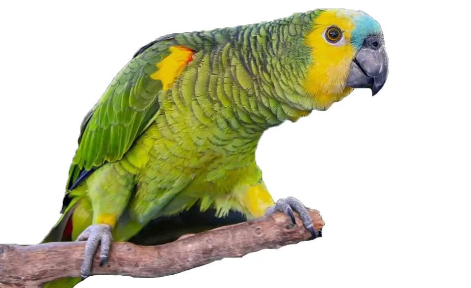

Informações sobre o Papagaio
O papagaio é uma das aves mais conhecidas e apreciadas como animal de estimação. São conhecidos por sua habilidade de imitar sons e falar algumas palavras. Eles também são muito sociais e podem formar laços fortes com seus donos.
Existem diversas espécies de papagaios, encontradas principalmente em regiões tropicais e subtropicais ao redor do mundo. Eles são conhecidos por sua plumagem colorida e por suas vocalizações distintas, que desempenham um papel importante na comunicação social e territorial.
Além de sua popularidade como animais de estimação, os papagaios desempenham um papel ecológico crucial em seus habitats naturais, ajudando na dispersão de sementes e contribuindo para a manutenção da biodiversidade. Eles também podem ser indicadores importantes da saúde dos ecossistemas em que vivem.
Os papagaios são animais inteligentes e curiosos, e podem ser treinados para realizar uma variedade de truques e comportamentos. Eles requerem cuidados especiais, incluindo uma dieta balanceada, estimulação mental e social, e atividade física adequada para garantir seu bem-estar e felicidade.
